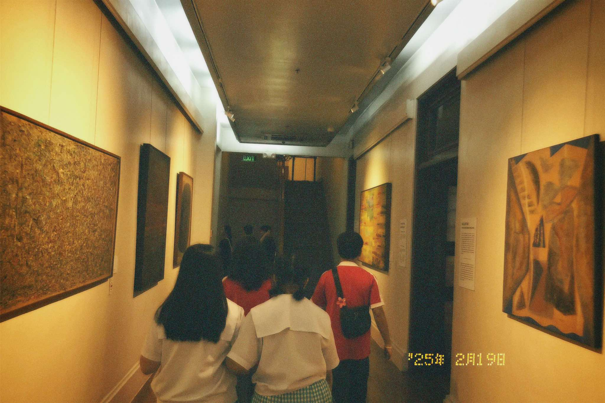

STEM SOCIAL ACTION PROGRAM 2025
|
Last February 19, 2025, the students of Science, Technology, Engineering, and Mathematics Strand of San Beda University-Manila SHS Class of 2025 participated in the Social Action Program with Grade 8 Students from their partner community, Claro M. Recto High School. In collaboration with one of their core subjects, Contemporary Arts of the Philippines from the Regions, the STEM students, paired with the Grade 8 students, went to the National Museum of Fine Arts and National Museum of Anthropology located in Ermita, Manila. The activity primarily aimed to deepen students’ understanding and appreciation of Philippine arts while promoting camaraderie and teamwork among students from different educational backgrounds. Through this activity, the students were able to explore the different artforms that perfectly encapsulate the culture and identity of the Philippines, especially by the exchange of interaction and discourse with the partner community. Ultimately, the activity not only enhanced the students' knowledge of Philippine arts but also showed that art can connect individuals from different backgrounds. |

|
|  |
The Social Action Program of San Beda University Manila for Senior High School students is a transformative initiative that fosters social responsibility, leadership, and community engagement. Rooted in the Benedictine values of ora et labora (prayer and work), this program encourages students to become compassionate and proactive agents of change in society. Through various outreach activities, environmental initiatives, and community development projects, students gain firsthand experience in addressing social issues such as poverty, education, and sustainability. The program includes immersion experiences, volunteer work, and partnerships with marginalized communities, allowing students to apply their knowledge and skills for the common good. |